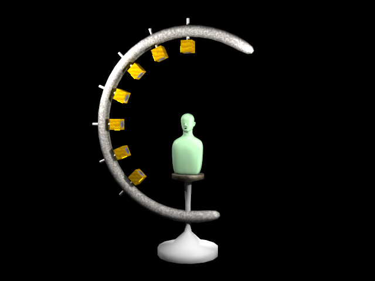

The head-related transfer function (HRTF) is the complex ratio between the spectra of the reference signal and the comparison signal. The reference signal is what is recorded by the microphone placed at the distance of r(m) from the source of the sound when there is not a dummy head. The comparison signal is what is recorded in the dummyhead's ear canal when the dummy head is placed at the distance of r(m) from the source of the sound.
To provide the 3-dimensional HRTF database, the HRTFs of many different directions have to be measured in the anechoic environment.
Figure 1 illustrates a typical equipment for the HRTF measurement. Multiple loudspeakers are arranged on the arc whose radius is r (m). To record the comparison signal, the dummyhead is placed at the center of the arc. In the case of the reference signal, a microphone, instead of the dummyhead, is placed at the center of the arc.
A test signal is presented by one of the loudspeakers. By changing the loudspeaker, HRTFs of the different latitude can be measured.
By rotating the dummyhead (or the arc) around the Y-axis, the HRTFs of the different longitudinal directions can be obtained.

Figure 1. Conventional measurement of the HRTF
The radius of the arc is usually 1 m or longer. The height of the equipment, therefore, has to be at least 2 m. This is why the large anechoic chamber is required for the HRTF measurement.
In most of the previous work, the reference and the comparison signals were recorded at the same distance from the sound source. In the calculation of the HRTF, therefore, most of the spectral cues about the depth information are cancelled.
By superimposing the HRTF of the specific direction to the monaural sound clip, you can generate the binaural signals of the sound. In theory, superimposition of the HRTF does not modify the depth of the original sound clip.